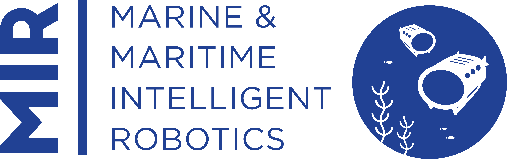

Md Raqibur Rahman
Lecturer
Department of Electrical and Computer Engineering
North South University
Dhaka 1229, Bangladesh
Personal Email
LinkedIn Github Google Scholar
Interests
- Robotics
- AI, Deep Learning, Computer Vision
- Traveling
- Photography
- Football, Cricket, Badminton
Professional Experience
Lecturer
January, 2025 - Present
Department of Electrical and Computer Engineering
North South University
Dhaka, Bangladesh.
Junior Developer (python)
September, 2021 - January, 2022
ITQAN Analytics & Software Limited
Dhaka, Bangladesh.
Education

Master in Marine and Maritime Intelligent Robotics
August 2023 - September 2024
Department of Marine Technology
Norwegian University of Science and Technology - NTNU
September 2022 - July 2023
University of Toulon
Grade: 16.513/20
Bachelor of Science in Electrical and Electronic Engineering

January 2018 – May 2022
Department of Electrical and Electronic Engineering (EEE)
Islamic University of Technology (IUT)
CGPA: 3.96 / 4.00 # Rank: 2 / 180 # Top 2% in graduating class
Research Experience
Published Articles
- Rahman, M.R., Haque, E., Rahman, S.T., Habibul Kabir, K. and Ahmed, Y.A., 2023. Modelling of an Efficient System for Predicting Ships’ Estimated Time of Arrival Using Artificial Neural Network. In Computational Intelligence: Select Proceedings of InCITe 2022 (pp. 199-206). Singapore: Springer Nature Singapore.
- Rahman, M.R., Tabassum, S., Haque, E., Nishat, M.M., Faisal, F. and Hossain, E., 2021, December. CNN-based Deep Learning Approach for Micro-crack Detection of Solar Panels. In 2021 3rd International Conference on Sustainable Technologies for Industry 4.0 (STI) (pp. 1-6). IEEE.
- Taz, N.H., Islam, A., Mahmud, I., Haque, E. and Rahman, M.R., 2021, August. A Comprehensive Exploration on Impact of Preprocessing for Prediction of Chronic Kidney Disease Using Multiple Machine Learning Approaches. In 2021 International Conference on Science & Contemporary Technologies (ICSCT) (pp. 1-6). IEEE.
Master’s Thesis
Title: Self Supervised Scale Consistent Depth and Ego-motion Learning From Monocular Video For Underwater Robots
Supervisor: Dr Martin Ludvigsen
Co-Advisor: Dr Ricard Marxer, Dr Maxime Ferrera
Undergraduate Thesis
Title: Modelling of an Efficient System for Predicting Ships’ Estimated Time of Arrival
Supervisor: Dr Khondokar Habibul Kabir
Projects
- Visual SLAM for underwater robots: In this project, an underwater dataset (VAROS) was used to perform visual and visual-inertial SLAM. ORB-SLAM3 algorithm was used with different image processing techniques to enhance the underwater images. [report]
- Dsac* with homography loss: This project was a part of the data driven machine perception course. It is about reiplementation of DSAC*. It is a learning-based visual re-localization method to get the camera 6-D pose (the camera rotation and translation) from single new image from the specific scene. This can be done by training DSAC* on the specific scene images. DSAC* is a combination of Scene Coordinate Regression with CNNs and Differentiable RANSAC (DSAC) for end-to-end training. We investigated the effect of Homography based loss function in the training process and how the loss function performs in these kind of problems.
- Dynamic Positioning system for offshore vessel: This project was completed as a part of the Marine Control System I course. The system can perform station keeping and set point following with different weather conditions.
- CNN-based model for Micro-crack Detection of Solar Panels: A CNN based model was created to detect micro-cracks in the solar PV panels.
- Base-5 number system calculator (sum, subtraction, multiplication and division): Designed in Proteus and implemented using TTL gate ICs.
Voluntary Experience
SHABASH FAKIBAJ™ LLC, Bangladesh: It is a multinational voluntary educational organization that makes students of Bangladesh aware of information regarding graduate studies abroad. I am working here as a Content Creator. Previously I worked here as Content Representative and Campus Ambassador(IUT) as well.
Technical Skills
Programming
- Python(sklearn, pytorch, pandas, numpy)
- MATLAB
- C
- HTML
- ROS
Design and Simulation Software
- Simulink
- Proteus
- PSpice
- PSIM
Hardware
- Raspberry Pi
- Arduino
General software
- Linux
- Cluster (SLURM based cloud computing)
- Google Docs
- MS Office (Word, Power Point, Excel)
- LaTeX
Honours and Awards
Erasmus Mundus Scholarship
Erasmus Mundus Joint Master's degree scholarship, an amount of total 49000 euro, is provided by the European Union towards the tuition fee and living expenses during two years master's studies.
OIC partial scholarship
13500 USD awarded for performing excellently in the admission test and provided towards covering tuition fee and living expense partially during my study at the Islamic University of Technology.